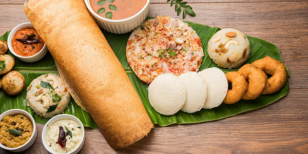

Where would you go?
If I could take a vacation right now, I would go to Bengaluru, a city in India. Though it is mostly known for its traffic, there’s a lot more to the city. It has peaceful lakes, and the early morning sunrises are serene with a cup of tea. My bucket list would have a lot of things, from calm walks to shopping around the city. I would start my morning with a peaceful walk around Cubbon Park. I will then hit the Bannerghatta Biological Zoo. I would love to catch up with my old friends and shop around in one of the famous malls like the Phoenix Market City.

Image Source: cubbonpark.in
What would you do?
My itinerary would include:
- Visit the Chinnasamy Stadium where a lot of famous cricket matches take place.
- Spend time at Wonderla, a water park, with friends to have fun.
- Hit the prime shopping spots like Commercial Street and Brigade Road.
- Go to Pyramid Valley International, a meditation center with vast gardens and libraries.
- Visit the Mysore Palace; the place is magical at night with all the lights lit up.
- Participate in the ‘Thindi Walk’ to try out local food spots.

Image Source: Wikipedia
What would you eat?
My trip to Bengaluru is going to be all about food. I would start with the very famous Masala Dosa and a cup of tea from the Rameshwaram Cafe. Then, I would have the classic BisiBeleBath, a Bengaluru staple. I would love to try the Hoskote Mutton Biriyani that is made fresh every morning. And of course, I’d end the day with a steaming cup of filter coffee.
Image Source: KSTDC Blog
If you could take a vacation, where would you go? What would you do? What food would you eat?